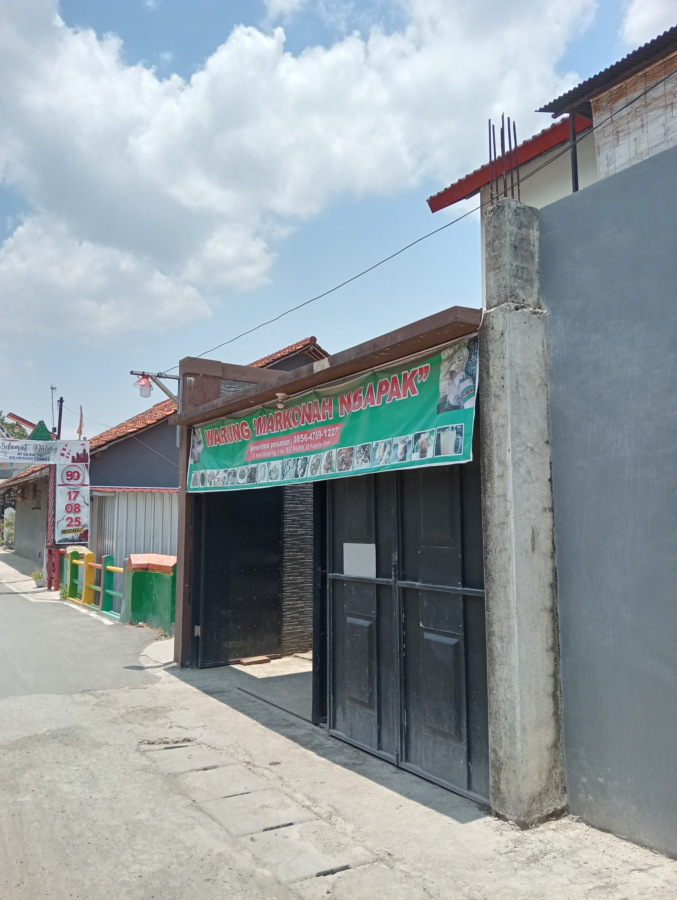

Tentang Glotak
Glotak adalah salah satu makanan tradisional khas Tegal, Jawa Tengah, yang memiliki cita rasa gurih, pedas, dan khas. Hidangan ini dibuat dari nangka muda (gori) yang dimasak dengan petis udang atau petis ikan, kemudian diberi tambahan berbagai bumbu rempah-rempah seperti bawang merah, bawang putih, cabai, daun jeruk, serta sedikit gula dan garam untuk menyeimbangkan rasa.
Nama “glotak” muncul dari bunyi khas “glotak-glotak” yang terdengar saat masakan ini diaduk di wajan ketika sedang dimasak. Suara itu berasal dari tekstur masakan yang kental dan berminyak akibat campuran petis dan santan. Dari bunyi inilah akhirnya masakan ini dikenal dengan nama glotak.
Secara tampilan, glotak berwarna hitam kecokelatan karena penggunaan petis sebagai bahan utama. Meski terlihat sederhana, cita rasanya sangat kaya — ada rasa gurih dari petis, pedas dari cabai, serta aroma harum dari daun jeruk dan bumbu tumisannya. Biasanya glotak disajikan bersama nasi hangat, kadang juga dipadukan dengan tempe goreng, tahu, atau lauk lainnya.
Selain rasanya yang unik, glotak juga memiliki nilai budaya yang tinggi. Makanan ini mencerminkan kreativitas masyarakat Tegal dalam mengolah bahan-bahan lokal menjadi hidangan lezat dan bernilai gizi. Dahulu, glotak sering disajikan dalam acara keluarga, hajatan, atau sebagai jamuan bagi tamu. Kini, glotak menjadi ikon kuliner khas Tegal yang banyak dicari wisatawan.
Jadi, secara lengkap dapat disimpulkan bahwa:
> Glotak adalah masakan tradisional khas Tegal berbahan dasar nangka muda yang dimasak dengan petis dan rempah-rempah, menghasilkan rasa gurih pedas yang khas serta melambangkan kekayaan cita rasa dan budaya kuliner masyarakat Tegal.
Sejarah Glotak
Asal-Usul Glotak
Glotak berasal dari Kota Tegal, Jawa Tengah — sebuah daerah pesisir utara Pulau Jawa yang terkenal dengan kekayaan kuliner tradisionalnya seperti sate tegal, kupat glabed, dan tahu aci. Makanan ini muncul dari kebiasaan masyarakat pesisir yang gemar mengolah hasil laut, terutama udang dan ikan, menjadi bahan makanan yang tahan lama, salah satunya berupa petis.
Petis sendiri merupakan hasil sampingan dari proses pembuatan saus atau kaldu udang dan ikan yang dimasak hingga kental. Karena masyarakat Tegal tidak suka menyia-nyiakan bahan makanan, petis yang tersisa kemudian diolah kembali dengan bahan lain agar bisa dijadikan lauk. Dari sinilah ide membuat masakan “glotak” lahir, yakni dengan mencampurkan petis bersama nangka muda (gori) dan rempah-rempah.
Asal Nama “Glotak”
Nama glotak memiliki cerita unik. Kata tersebut berasal dari bunyi “glotak-glotak” yang muncul saat masakan ini diaduk di wajan. Karena petis yang digunakan kental dan berminyak, ketika dimasak akan menimbulkan suara khas seperti “glotak… glotak…”.
Suara inilah yang kemudian diabadikan menjadi nama masakan tersebut. Jadi, “glotak” bukan berasal dari bahan dasarnya, melainkan dari suara khas selama proses memasak yang menjadi ciri khasnya.
Makna dan Filosofi Glotak
Bagi masyarakat Tegal, glotak bukan sekadar makanan, melainkan warisan budaya kuliner yang menandakan kesederhanaan dan kebersamaan.
Petis melambangkan kekuatan dan ketekunan masyarakat pesisir.
Nangka muda melambangkan kesuburan dan hasil bumi.
Rasa pedas gurihnya menggambarkan semangat hidup dan kegigihan masyarakat Tegal.
Secara historis dan budaya, Glotak adalah masakan tradisional khas Tegal yang lahir dari kreativitas masyarakat pesisir dalam memanfaatkan petis dan nangka muda sebagai bahan sederhana namun bernilai tinggi.
Makanan ini mencerminkan perpaduan budaya, rasa kebersamaan, dan semangat hidup masyarakat Tegal yang sederhana namun penuh makna.
Lokasi Penjualan Glotak
Temukan lokasi penelitian dan pembuatan glotak kami di peta berikut:
Alamat:
Jl. Imam Bonjol, Gg 9, RT 4/2, Kelurahan Kudaile, Slawi, Kabupaten Tegal
📍 Buka di Google Maps
